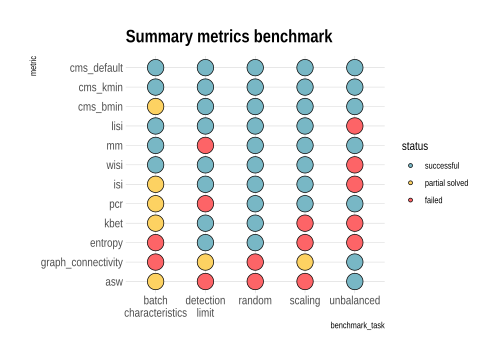

suppressPackageStartupMessages({
library(scater)
library(CellMixS)
library(purrr)
library(tidyr)
library(dplyr)
library(gridExtra)
library(scran)
library(cowplot)
library(jcolors)
library(ggpubr)
library(stringr)
library(viridis)
library(scales)
library(hrbrthemes)
library(magrittr)
library(forcats)
library(corrplot)
library(RColorBrewer)
library(gridExtra)
library(grid)
library(cowplot)
library(ggpubr)
library(wesanderson)
})
options(bitmapType='cairo')metrics <- unlist(c(strsplit(params$metrics, ",")))
chars <- unlist(c(strsplit(params$chars, ",")))
cor_list <- lapply(chars, function(char){
cor_file <- paste0(params$cor_path, "cor_", char, ".rds")
cor <- readRDS(cor_file)
}) %>% set_names(chars)
sim_scaling <- readRDS(params$sim_res)
unbalanced <- readRDS(params$unbalanced)
#make sure all imputs have common metric names
metric_com <- function(cor_res){
met_all <- colnames(cor_res)
cms_kmin <- grep("kmin", met_all)
cms_bmin <- grep("bmin", met_all)
cms_ind <- grep("cms(?!.*min)", met_all, perl = TRUE)
graph_ind <- grep("graph", met_all)
colnames(cor_res)[c(cms_ind, cms_kmin, cms_bmin)] <- c('cms_default', 'cms_kmin', 'cms_bmin')
colnames(cor_res)[graph_ind] <- "graph_connectivity"
rownames(cor_res) <- colnames(cor_res)
cor_res <- cor_res[metrics,]
}
cor_list <- cor_list %>% map(metric_com)
#get mean of random data to weight tasks equally
rand_char <- chars[grep("random", chars)]
cor_list[["random"]] <- apply(simplify2array(cor_list[rand_char]), 1:2,
mean, na.rm = TRUE)
batch_char <- cor_list[["batch_characteristics"]][, c("mean_var_batch", "mean_de_genes")] %>%
rowMeans() %>% as.data.frame() %>% set_colnames("mean_char") %>%
mutate(metric = rownames(cor_list[["batch_characteristics"]]))
random <- cor_list[["random"]] %>% as.data.frame() %>%
mutate(metric = rownames(cor_list[["random"]])) %>%
select(metric, randomness)
cor_met <- function(res){
res$metric <- gsub("\\.", "_", res$metric)
res$metric[res$metric %in% "cms_batch_id"] <- "cms_default"
res
}
sim_scaling <- cor_met(sim_scaling)
unbalanced <- cor_met(unbalanced)Create rankings and status (like passed, partial solved, failed) for all metrics.
batch_char_rank <- batch_char %>% mutate(rank = nrow(.) + 1 - rank(abs(mean_char), ties.method = "max")) %>%
mutate(status = ifelse(abs(mean_char) >= 0.75, "successful",
ifelse(abs(mean_char) >= 0.5, "partial solved", "failed")))
batch_char_rank <- left_join(batch_char_rank, sim_scaling[,c("metric", "metric_level")])## Joining, by = "metric"random_rank <- random %>% mutate(rank = nrow(.) + 1 - rank(abs(randomness), ties.method = "max")) %>%
mutate(status = ifelse(abs(randomness) >= 0.8, "successful",
ifelse(abs(randomness) >= 0.6, "partial solved", "failed")))
random_rank <- left_join(random_rank, sim_scaling[,c("metric", "metric_level")])## Joining, by = "metric"detection_limit_rank <- sim_scaling %>% mutate(rank = rank(abs(mean_limit), ties.method = "min")) %>%
mutate(status = ifelse(abs(mean_limit) <= 0.2, "successful",
ifelse(abs(mean_limit) <= 0.4, "partial solved", "failed"))) %>%
select(-c(mean_correlation, correlation_sd, batch_limit_sd))
scaling_rank <- sim_scaling %>% mutate(rank = nrow(.) + 1 - rank(abs(mean_correlation), ties.method = "max")) %>%
mutate(status = ifelse(abs(mean_correlation) >= 0.9, "successful",
ifelse(abs(mean_correlation) >= 0.8, "partial solved", "failed"))) %>%
select(-c(mean_limit, correlation_sd, batch_limit_sd))
unbalanced_rank <- unbalanced %>% mutate(rank = nrow(.) + 1 - rank(abs(unb_limit), ties.method = "max")) %>%
mutate(status = ifelse(abs(unb_limit) >= 0.9, "successful",
ifelse(abs(unb_limit) >= 0.75, "partial solved", "failed"))) %>%
select(-c(unb_limit_sd))
unbalanced_rank <- left_join(unbalanced_rank, sim_scaling[,c("metric", "metric_level")])## Joining, by = "metric"#Combine results in one table
col_all <- c("metric", "metric_level", "status", "rank")
res_all <- bind_rows("random" = random_rank[, col_all],
"batch\ncharacteristics" = batch_char_rank[, col_all],
"detection\nlimit" = detection_limit_rank[, col_all],
"scaling" = scaling_rank[, col_all],
"unbalanced" = unbalanced_rank[, col_all], .id = "benchmark_task")
res_all$benchmark_task <- as.factor(res_all$benchmark_task)
res_all$metric <- as.factor(res_all$metric)
res_mod <- res_all %>% mutate(fake_rank = rep(1, nrow(res_all)))
res_mod$status <- factor(res_mod$status, levels = c("successful","partial solved", "failed"))
metric_rank <- res_mod %>% group_by(metric) %>%
summarize("overall_score" = sum(as.numeric(as.factor(status)))) %>%
mutate(overall_rank = rank(overall_score, ties.method = "first")) %>%
arrange(desc(overall_rank))
res_mod$metric <- factor(res_mod$metric, levels = metric_rank$metric)col_task <- c(wes_palette("Zissou1")[2],
wes_palette("Chevalier1")[2],
wes_palette("GrandBudapest1")[2]) %>% set_names(c("successful","partial solved", "failed"))
#col_task <- wes_palette("Zissou1")[c(1,3,5)]
ggballoonplot(res_mod,
x = 'benchmark_task',
y = 'metric',
size = "fake_rank",
col = "black",
fill = 'status') +
labs(title="Summary metrics benchmark") +
theme_ipsum() +
scale_fill_manual(values = col_task) +
guides(size = FALSE) 
# + annotate("text", x = res_mod$benchmark_task[res_mod$rank == 1],
# y = res_mod$metric[res_mod$rank == 1], label = "*")
metric_rank_order <- res_mod %>% group_by(metric) %>%
summarize("overall_rank_score" = sum(rank)) %>%
mutate(overall_rank = rank(overall_rank_score, ties.method = "first")) %>%
arrange(overall_rank)
metric_rank_order## # A tibble: 12 x 3
## metric overall_rank_score overall_rank
## <fct> <dbl> <int>
## 1 cms_kmin 18 1
## 2 cms_default 20 2
## 3 lisi 21 3
## 4 cms_bmin 24 4
## 5 wisi 26 5
## 6 pcr 27 6
## 7 mm 28 7
## 8 isi 37 8
## 9 kbet 39 9
## 10 graph_connectivity 43 10
## 11 asw 44 11
## 12 entropy 47 12